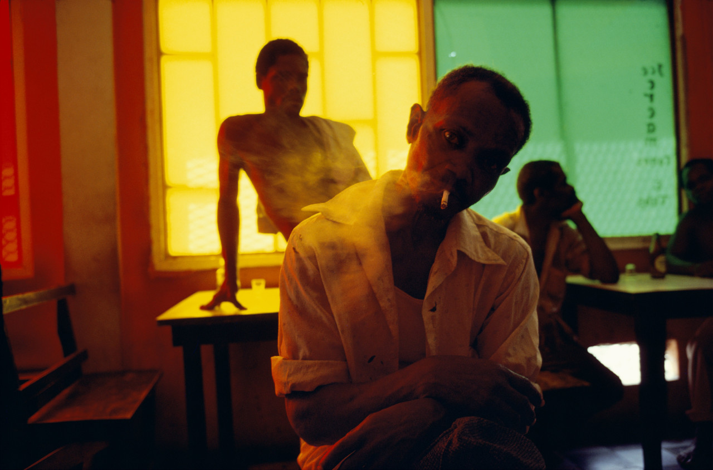
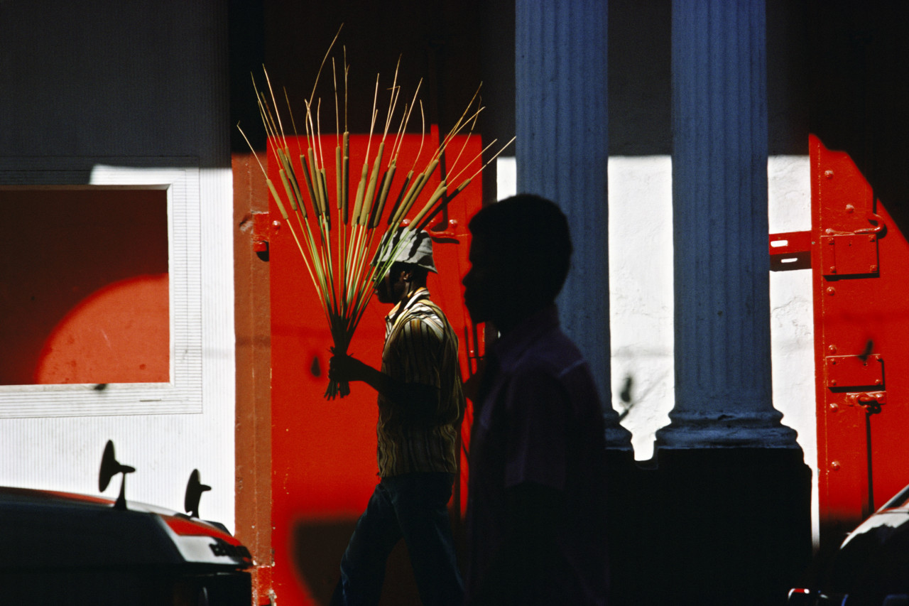

As a child, Harry Gruyaert dreamed of becoming a director, but after working as a director of television documentaries, he changed his mind and instead turned his attention to photography. So the world got one of the most talented street photographers.Harry Gruyer was born in 1941 in Antwerp, Belgium, and studied at the Film and Photography School in Brussels from 1959 to 1962. He later became a photographer in Paris, working between 1963 and 1967 as a freelance director on Flemish television.In 1969, he made his first of many trips to Morocco.
From 1970 to 1972, Harry Gruyer lived in London. It was a great opportunity for him to conduct unprecedented visual experiments: he decided to cover and film the 1972 Munich Olympics and the first flight of the Apollo. He had only a broken TV at his disposal, with which he managed to experiment with colors. "I try to portray what is the most powerful," says Gruyer about his works. "To tell the whole story, rather than a part of it, is more like a picture, a complete picture." In 1973-1980, he made a long journey through Belgium, taking first black-and-white, and then color photographs. Harry Gruyer joined the Magnum Agency in 1981. He has traveled extensively, including Asia, the USA, the Middle East and Russia. In the 2000s, Harry Gruyer abandoned film in favor of digital photography.
